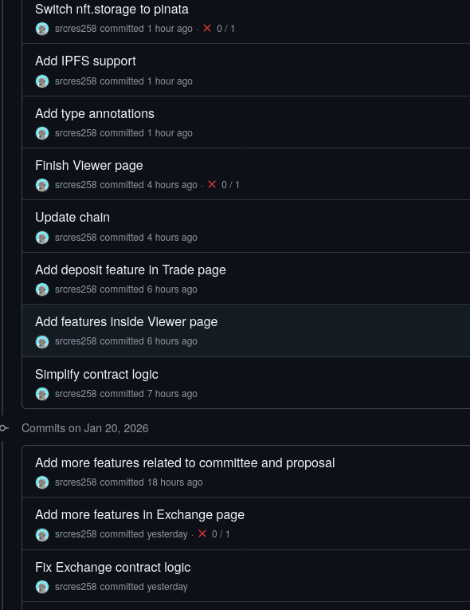
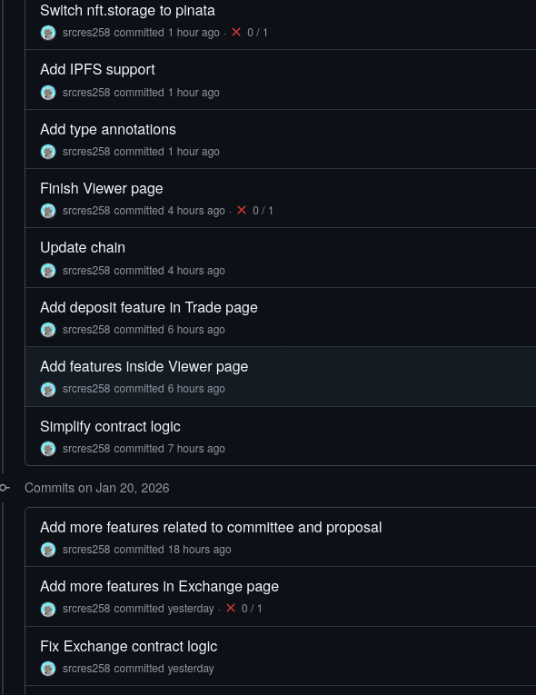
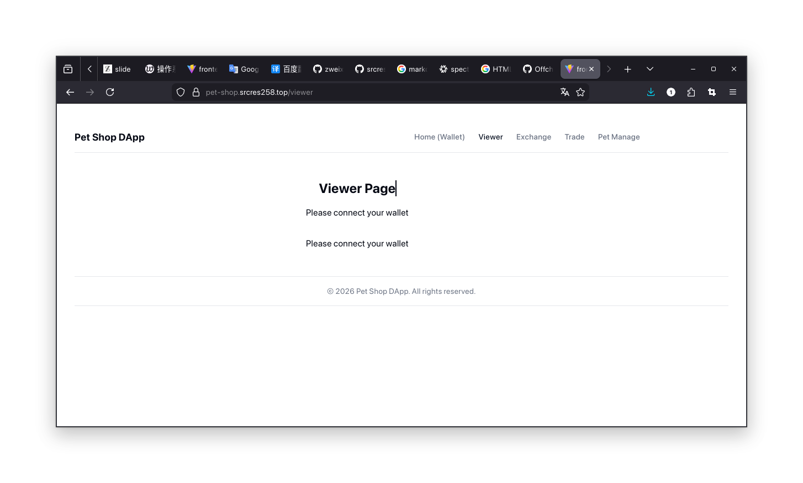
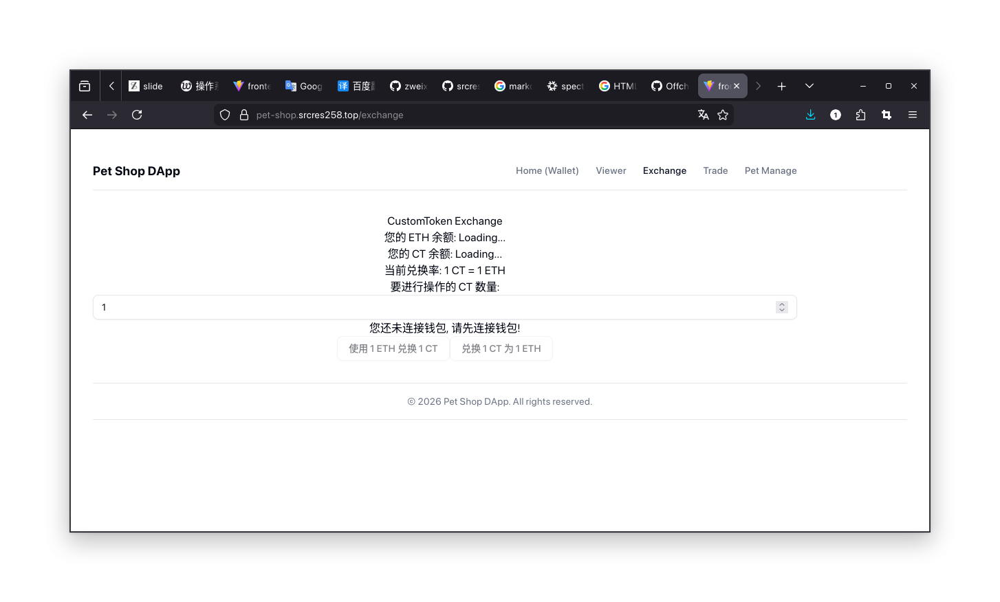
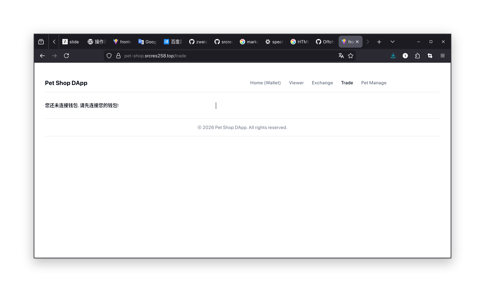
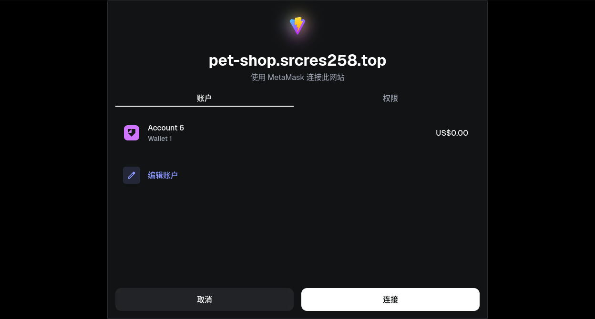
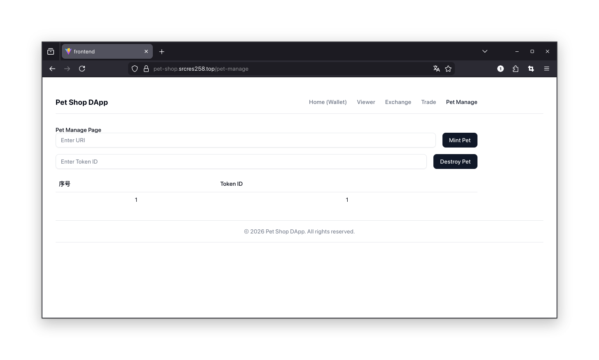

前情提要: 我燃尽了
一些个人感慨
前情提要: 我燃尽了
-
首先感谢老师为我们提供这次宝贵的实习机会, 并让我们答辩.
- 通过本次实习, 大家受益匪浅.
-
个人感慨: Ethereum DApp 开发还是有很大的上手难度的
-
自己低估了开发工作量
之前一直在准备自己期末考试 (1月19号的新思想, 花了较多时间)
于是1月20号才开始上手项目
- 起初以为很简单, 但是嘛...
前情提要: 我燃尽了 (cont'd)
 


工作量还是相当大的...
前情提要: 我燃尽了 (cont'd)
-
自己学了 Solidity 语言, 会写智能合约后端.
-
以为 DApp 前端的开发也得心应手 (很容易上手).
- 结果...
前情提要: 我燃尽了 (cont'd)


前情提要: 我燃尽了 (cont'd)
-
过程中还遇到了很多 trivial errors
- 限于忘记截图记录, 不方便 present
-
教训: 以后实事求是, 避免盲目自信
-
特别是对于自己尚且生疏的技术栈
-
需要给自己留够时间 (合理安排时间)
-
-
其实对于本次实习, 如果时间充裕, 我能做得更好
-
主要因为 期末备考 , 以及 个人参与的一些科研项目 , 耽误了实习进展
-
以后也会投入更多精力到 main task 上
-
项目概述及成果展示
项目概述
-
项目名称: Pet Shop DApp
-
(灵感就是来源于上个实习的 "Pet Shop")
-
但完全自己从头实现了一个 own version
-
-
基本功能
-
宠物 (Pet) 的
mint与burn -
宠物代币 (Token) 的兑换
-
用户之间进行宠物交易
-
查看用户基本信息 (拥有多少宠物代币, 以及宠物)
-
功能说明
Viewer 界面: 查看用户基本信息 (拥有哪些资产).

功能说明 (cont'd)
Exchange 界面: 用户用 ETH 兑换 CustomToken
(本 DApp 自定义的一种 ERC-20 Token).

功能说明 (cont'd)
Trade 界面: 用户发起交易 (向买家发出交易请求，附带上自己拥有的宠物).

功能说明 (cont'd)
Pet Manage 界面: 用户提供信息, 为自己的账户生成/销毁 Pet.

使用方式
使用本 DApp 前, 需要先连接钱包 (在Wallet Page).

使用方式 (cont'd)
在自己的钱包 App 中确认连接.

使用方式 (cont'd)
随后再前往各界面, 即可正常操作.

使用方式 (cont'd)

使用方式 (cont'd)

使用方式 (cont'd)

技术栈浅析
后端原理解析
后端原理解析
- 后端基于 Solidity 实现.
[I] srcres@srcres-desktop ~/C/L/dapp-pet-shop-new (master)> tree src 16:55:51
src
├── CustomPet.sol
├── CustomToken.sol
├── Exchange.sol
├── TradeFactory.sol
├── Trade.sol
└── Viewer.sol
1 directory, 6 files
后端原理解析 (cont'd)
-
CustomPet.sol - ERC-721 Token (CP)
- 由本 DApp 定义的 Pet (宠物), 管理自定义宠物创建和属性.
-
CustomToken.sol - ERC-20 Token (CT)
- 本 DApp 自定义的一种货币, 在用户之间进行 Trade 时使用.
-
Exchange.sol - ETH 与 (CT) 之间兑换
- 处理代币交换和流动性.
后端原理解析 (cont'd)
-
Trade.sol - 代表用户之间的宠物交易
- 执行宠物交易逻辑.
-
TradeFactory.sol - 为用户提供 Trade 创建服务
- 创建和管理交易实例.
-
Viewer.sol - 为用户提供资产讯息查询服务
- 提供合约数据查询接口.
后端主要实现逻辑 - CustomPet
- 用户调用
mint为自己生成宠物. 调用burn删除宠物.
/// @notice 真正的 Token 铸造逻辑. 提案通过后自动调用.
function mint(address to, string memory uri) external {
uint256 tokenId = _tokenIdCounter++;
_safeMint(to, tokenId);
_setTokenURI(tokenId, uri);
}
/// @notice 真正的 Token 销毁逻辑. 提案通过后自动调用.
function burn(uint256 tokenId) external {
_burn(tokenId);
}
后端主要实现逻辑 - CustomPet (cont'd)
-
注意: 此处为了统计 ERC-721 Token 的数量, 需要符合
ERC721Enumerable标准.- 借由 OpenZeppelin lib 以简化实现
contract CustomPet is ERC721URIStorage, ERC721Enumerable {
- 因为多重继承. 重写相关方法
function tokenURI(uint256 tokenId) public view virtual override(ERC721, ERC721URIStorage) returns (string memory) {
...
function supportsInterface(bytes4 interfaceId)
...
function destroy(uint256 tokenId) external {
...
后端主要实现逻辑 - CustomToken
- 这个比较简单.
mint&burn
function mint(address to, uint256 amount) external {
_mint(to, amount);
}
function burn(address from, uint256 amount) external {
_burn(from, amount);
}
后端主要实现逻辑 - Exchange
-
Exchange 工作逻辑: 自己起一个接收 ETH 的辅助作用.
-
用户发来 ETH 兑换 CT - 铸造相应数量 CT 给用户.
-
用户发来 CT 兑换 ETH - 销毁 CT, 然后给用户转回 ETH.
-
-
当然这过程中涉及到比例因子
k的换算.
后端主要实现逻辑 - Exchange (cont'd)
- 以 k 汇率兑换 ETH 为 CT
/// @notice 以 k 汇率兑换 ETH 为 CT
function exchangeETHToCT() external payable {
require(msg.value > 0, "Must send ETH to exchange for CT.");
uint256 ctAmount = msg.value * 1 ether / k;
ct.mint(msg.sender, ctAmount);
emit ExchangedETHToCT(msg.sender, msg.value, ctAmount);
}
后端主要实现逻辑 - Exchange (cont'd)
-
以 k 汇率兑换 CT 为 ETH
- 注意换算关系: 1 CT = k ETH. 此处反过来了, 所以要除以 k.
function exchangeCTToETH(uint256 ctWeiAmount) external {
require(ctWeiAmount > 0, "Must specify CT amount to exchange for ETH.");
uint256 ethWeiAmount = ctWeiAmount * k / 1 ether;
require(address(this).balance >= ethWeiAmount, "There is no sufficient ETH in the exchange.");
ct.burn(msg.sender, ctWeiAmount);
(bool success,) = payable(msg.sender).call{value: ethWeiAmount}("");
require(success, "ETH transfer failed.");
emit ExchangedCTToETH(msg.sender, ctWeiAmount, ethWeiAmount);
}
后端主要实现逻辑 - Trade
- 这个比较复杂. 交易行为的一切实现需要多重信息
constructor(
address _seller, // 卖方
address _buyer, // 买方
uint256 _duration, // 交易持续时间 (有效期)
uint256 _priceCT, // 交易价格 (CT, 买方需要支付的)
address _ctAddress,
address _cpAddress
) {
....
}
- 重点:
_seller,_buyer,_duration,_priceCT
后端主要实现逻辑 - Trade (cont'd)
- 交易创建后, 卖方还需存入需要进行交易的 CP.
/// @notice 卖方存入 CP (可多次调用).
function depositCP(uint256[] memory tokenIds) external {
require(msg.sender == seller, "Only seller can deposit CP.");
require(active, "Trade is not active.");
for (uint256 i = 0; i < tokenIds.length; i++) {
cp.transferFrom(seller, address(this), tokenIds[i]);
depositedCPs.push(tokenIds[i]);
}
}
后端主要实现逻辑 - Trade (cont'd)
- 买方收到交易, 通过
confirm确认, 并支付 CT.
function confirm() external {
require(msg.sender == buyer, "Only buyer can confirm trade.");
require(active, "Trade is not active.");
require(block.timestamp < expiration, "Trade has expired.");
...
}
后端主要实现逻辑 - Trade (cont'd)
- 卖方随时可以终止交易
cancel
/// @notice 卖方取消交易, 退还 CP.
function cancel() external {
require(msg.sender == seller, "Only seller can cancel trade.");
require(active, "Trade is not active.");
// Return CPs to seller
_returnCPs();
active = false;
emit TradeCancelled();
}
后端主要实现逻辑 - Trade (cont'd)
-
注意上述合约过程都在检查 Trade 是否 expired.
-
如果 expire 了,
require条件不满足, 上述操作不再能够成功. -
需要调用
expire处理交易失效事宜.
-
/// @notice 检查并处理过期交易, 退还 CP.
/// (当交易过期后, 任何人均可调用此函数来处理过期逻辑. 可考虑写自动化脚本定期调用.)
function expire() external {
require(block.timestamp >= expiration, "Trade has not expired yet.");
require(active, "Trade is not active.");
...
// Return CPs to seller
_returnCPs();
...
}
- 其中
_returnCPs会处理交易失效逻辑. 将没卖出去的 CP 还给卖方.
后端主要实现逻辑 - TradeFactory
-
这个合约主要管理 Trade 的创建.
-
工厂模式设计. Trade 的 constructor 不暴露给用户.
-
用户调用 TradeFactory 的相关方法来创建 Trade.
-
/// @notice 创建新的交易实例.
function createTrade(address _buyer, uint256 _duration, uint256 _priceCT) external {
Trade trade = new Trade(msg.sender, _buyer, _duration, _priceCT, ctAddress, cpAddress);
trades.push(address(trade));
emit TradeCreated(address(trade));
}
后端主要实现逻辑 - TradeFactory (cont'd)
- TradeFactory 还会记录所有发生过的 Trade. 便于用户查询.
/// @notice 获取所有交易实例地址.
function getTrades() external view returns (address[] memory) {
return trades;
}
后端主要实现逻辑 - Viewer
-
本合约专供用户查询信息.
-
任何与资产变动相关交易发生, 将会自动记录在 Viewer 上.
-
用户后续可通过 Viewer 查询.
-
-
e.g.
function getOwnedCPs(address user) external view returns (
function getUserSellingTrades(address user) external view returns (address[] memory) {
function getUserBuyingTrades(address user) external view returns (address[] memory) {
function getUserAllTrades(address user) external view returns (address[] memory) {
前端原理解析
前端原理解析
-
其实 DApp 的开发重头戏往往在后端
-
加之本人对前端技术栈知之甚少.
- 做这个项目很多技术栈都是现学现用的 (所以瑕疵不可避免).
-
从网上道听途说, 先选了 Vite
- 都说这个框架构建静态网站非常友好
- 后面用熟悉了, 慢慢地自己向前摸索, 有了 React, wagmi 等等
- 再后来想稍微美化一下界面, 又用了 shadcn 这个 UI lib
基于 Vite + React 的前端项目框架
.
├── components.json
├── src
├── tsconfig.app.json
├── tsconfig.json
├── tsconfig.node.json
└── vite.config.ts
源代码存在 src 目录下
基于 Vite + React 的前端项目框架 (cont'd)
├── src
│ ├── abis
│ ├── App.css
│ ├── App.tsx
│ ├── assets
│ ├── components
│ ├── constants.ts
│ ├── hooks
│ ├── index.css
│ ├── lib
│ ├── main.tsx
│ └── pages
-
其中
pages就是前端网页内容主要源码- 基于 tsx 文件, 便于编写 HTML 标签
主要源码一览
-
main.tsx- 借助 React lib. 创建根页面来渲染
createRoot(document.getElementById('root')!).render(
<StrictMode>
<Web3Provider>
<BrowserRouter>
<App />
</BrowserRouter>
</Web3Provider>
</StrictMode>
);
主要源码一览 (cont'd)
-
App.tsx- 用
Route标签建立子页面路由
- 用
<Routes>
<Route element={<MainLayout />}>
<Route index element={<Index />} />
<Route path="viewer" element={<Viewer />} />
<Route path="exchange" element={<Exchange />} />
<Route path="trade" element={<Trade />} />
<Route path="pet-manage" element={<PetManage />} />
</Route>
</Routes>
主要源码一览 (cont'd)
-
pages/viewer.tsx- 定义根组件并用 ES6 语法
export, 根组件再包含子组件
- 定义根组件并用 ES6 语法
function OwnedCPList() {
...
function TradeList() {
...
function Viewer() {
return (
...
<OwnedCPList />
...
<TradeList />
...
}
export default Viewer;
主要源码一览 (cont'd)
- 其他子页面也是类似操作
function Trade() {
...
}
export default Trade;
function PetManage() {
return (
...
);
}
export default PetManage;
DApp部署/上链方式
后端部署方式
- 由于后端基于 Foundry 框架. 故需要编写 script
contract DeployScript is Script {
function run() public {
...
// 1. Initialise tokens
CustomToken ct = new CustomToken();
CustomPet cp = new CustomPet();
// 2. Initialise exchange
// Initially: k = 1 ether = 10^18 wei
Exchange exchange = new Exchange(ct, 1 ether);
后端部署方式 (cont'd)
// 3. Initialise trade factory
TradeFactory tradeFactory = new TradeFactory(address(ct), address(cp));
// 4. Initialise viewer
Viewer viewer = new Viewer(cp, tradeFactory);
// 5. Output deployed addresses
...
vm.stopBroadcast();
}
}
后端部署方式 (cont'd)
-
编写好脚本后, 确定自己要部署到哪条区块链上. 取得相应 RPC URL
-
运行
forge script script/Deploy.s.sol:DeployScript --rpc-url $RPC_URL --broadcast --private-key $PRIVATE_KEY
前端部署方式
-
由于基于 Vite 框架, 所以非常简单.
- Vite 脚手架已经给我们写好了命令
"scripts": {
"dev": "vite",
"build": "tsc -b && vite build",
"lint": "eslint .",
"preview": "vite preview"
},
-
直接
pnpm build(或者如果用npm或yarn的话, 换成相应的命令) -
接着在
dist目录下就得到了构建好的静态文件- 将其部署到静态 Web 服务器上即可.
总结与反思
实习总结
- 这接连两周目的实训, 给我收获颇丰
-
最初完全不懂 block chain 是啥?
-
还以为是 "炒币的" "投机分子" 干的勾当 😂 (国家确实在严厉打击)
-
但深入与老师交流后, 才洞悉其背后的技术价值精髓❗❗
-
-
这涉及到伦理层面的东西了
-
任何事物都有两面性. 取其精华, 弃其糟粕.
-
任何事物并不是非黑即白的. 对人对事, 需要建立全面认知, 切忌片面定论.
-
当初 AI 大模型 🤖 技术, 刚出来时, 也有人讨论过这个话题. (值得商榷)
-
实习总结 (cont'd)
-
同时给我的编程素养也有很大提升
- 如何提升自我修养, 做一个高素质人才/高品质 IT 从业者
-
我们学院派 (Academia) 缺乏工程 (Software Enginerring) 实践经验.
-
通过这次实习, 作为一个 window, 能够窥探区块链行业动态
-
同时学习到, 如何成为优秀的区块链工程师
-
自己的不足与反思
-
当然, 自己在完成实习项目过程中也难免有纰漏
-
对于前端框架的生疏, 导致需要额外付出学习成本
-
对于以太坊智能合约的执行原理也浅尝辄止
-
只知道 EVM 工作的大致模型
-
间接导致写合约时过于复杂的代码逻辑难以理清
-
-
也是因为上述种种原因, 代码的测试也无从下手
-
自己缺乏软件工程实战经验, 不知道咋写 Unit Tests
-
进而导致 Debug 能力也欠缺. (更不用说在技术栈/框架都是完全陌生的基础上.)
-
自己的不足与反思 (cont'd)
- 实际上, 以下是我最初所立下的项目需求的原始版本草稿.
1. 本 DApp 依靠自定义的 ERC-20 Token 运行. 该 Token 名称为 `CustomToken` (缩写为 `CT`), 由 ETH 按一定比例 (汇率) 换算后兑换, 公式为 1 CT = k * 1 ETH, 其中 k 为兑换比例系数. 用户可用 ETH 兑换 CT, 也可以将自己的 CT 自由兑换回 ETH, 但一切行为均需实时按照当前汇率来换算. 该系数可以后期手动调整, 调整需由委员会表决.
2. 本 DApp 采取 "委员会治理" 模式, 基于委员会共识机制运行. 用户若要加入委员会, 需向委员会质押 ETH. 该质押量对于各个用户来说都可以调整, 用户在质押后可以人为添加质押量, 也可以取回自己质押的 ETH. 若用户将自己质押的 ETH 完全取回, 代表退出委员会.
3. 本 DApp 中发行一种基于 ERC-721 的 Token, 名为 `CustomPet` (缩写为 `CP`). 该 Token 的 mint 与 destroy 行为, 均由委员会管理. 在 mint 该 token 时, 需同时指定要 mint 的 token 的 URI 作为其详细信息.
4. 委员会单独管理一个账户地址, 专门用于存放委员会名下的各种资产 (ETH, CT, CP). 该账户地址具有商店机制, 可选择该机制是否开启或者关闭, 商店中对所陈列的各种 CP Token 进行标价; 其中商店的开启与关闭 (默认关闭), 商店中 CP 的上架, 各个 CP Token 的定价, 均需由委员会表决. 当商店功能开启时, 用户可从该账户地址以指定数量的 CT Token 从该账户购买 CP, 亦可向该账户发送自己的 CP 以换取 CT Token. 其中:
- 商店上架 CP 时, 应同时指定该 CP 的 CT 价格.
- 以 CT 买 CP 时, 所提供的 CT 应该足够支付相应 CP 的价格. 若支付的 CT 不足, 则购买失败并退回所有 CT. 若支付超额, 则退还多余部分 CT.
- 以 CP 换 CT 时, 所兑换的相应 CT 数量的计算方式为: 对商店中当前上架的所有 CP 的价格取平均值, 记其为 a CT; 然后对每个发送给当前账户的 CP, 在 (0, a) CT 开区间内取随机数, 该随机数的种子为当前交易的 blockNumber, 最后累加起来得到应该返还给用户的 CT 数量. 不过在返还前需先检查当前商店账户中的 CT 余额是否足够传送, 若不够则交易失败, 应回退本次交易 (即 CT 无任何变动, 用户提供的 CP 回退给用户).
- 在上述功能中, CP 买 CT, CT 换 CP, 这些功能均有开关选项, 可以控制开启或者关闭 (默认关闭). 若相关功能关闭, 用户发起调用相应功能的交易时则直接失败, 回退交易.
- 只有委员会成员能够向该账户传送资产或者提取资产. 传送方式为直接向该地址 send 资产 (注: 此时 **不是** 调用商店功能的意思, 单纯的传送资产), 提取方式为该地址有个接口功能, 调用该接口并指定资产类型和数量后, 地址自动发送相应种类的数量和资产给调用者. 这些所有行为, 均需经过委员会表决.
自己的不足与反思 (cont'd)
5. 委员会管理 (需进行表决) 的事项如下:
- CT 与 ETH 之间的汇率系数 k 的调整.
- CP 的 mint.
- CP 的 destroy.
- 修改表决时间 t. (表决时间默认值为 30 秒)
其中的每个事项均有发起者. 当事项发起后, 会自动创建针对相应事项的表决合约, 其中表决时间以当前 t 值 (定义见上) 为准. 在表决时间之内, 所有委员会成员均可调用该合约的投票函数, 投下自己是赞成该事项或者是反对该事项, 每个成员仅能投一票. 表决时间到时, 该合约将统计票数, 并计算赞成票的加权比例. 加权的计算方式为自己投的票的种类, 乘以自己质押的 ETH 数量作为话语权因子; 加权比例的计算方式是, 该票种的权重除以所有票种的权重的总和. 若最终所得到的赞成票的加权比例大于或者等于 50% 则相应的事项最终生效, 反之失效 (注: 若总票数为 0 即无人投票, 视为失效). 所有委员会成员均有权利查看当前正在进行的所有表决事项, 并选定任意一个事项参与投票. 所有用户 (即使不是委员会成员) 均有权利查看所有表决事项 (正在进行的以及已结束的历史事项) 的信息, 但是只有委员会成员可以参与投票.
6. 所有用户对于自己所拥有的 CP, 均可创建一个交易合约, 指定卖方 (自己) 以及目标买方, 同时指定一个交易有效期, 以及交易价格 CT (只能用 CT 进行交易). 卖方也要同时将自己需要交易的 CP (可以放多个, 不止一个) 放入该合约中. 买方需要在交易有效期内向该交易合约发送足够数量的 CT 来确认交易. 交易确认后, 买方将收到该交易合约中的所有 CP, 卖方将收到自己当初指定的数量的 CT. 注意若买方支付了过额的 CT, 应将多余部分退回买方; 若买方支付的 CT 不足, 则退还全部 CT, 但交易一直保持有效, 直到过期. 交易过期后, 卖方将收到来自该交易合约退还的 CP. 卖方如果有需要, 可以手动取消交易, 此时交易合约将在有效期前提前失效. 交易失效后, 买方不应当向该交易合约再发送任何 CT, 即使发送了也应该回退.
7. 所有用户均有权利查看自己账户下面所拥有的所有 CP 以及各 CP 的详细信息, 以及自己发起过的所有交易 (完成的/失效的/正在进行的).
- 但是后面发现需求过于庞大. 不得不疯狂剔除精简, 最终只剩下骨干.
自己的不足与反思 (cont'd)
-
所以, 在软件工程中 "好高骛远" 是绝对不可取的.
-
始终立足平地, 才能行稳致远.
谢谢聆听
不足之处, 烦请斧正